Queridas almas yoguis,
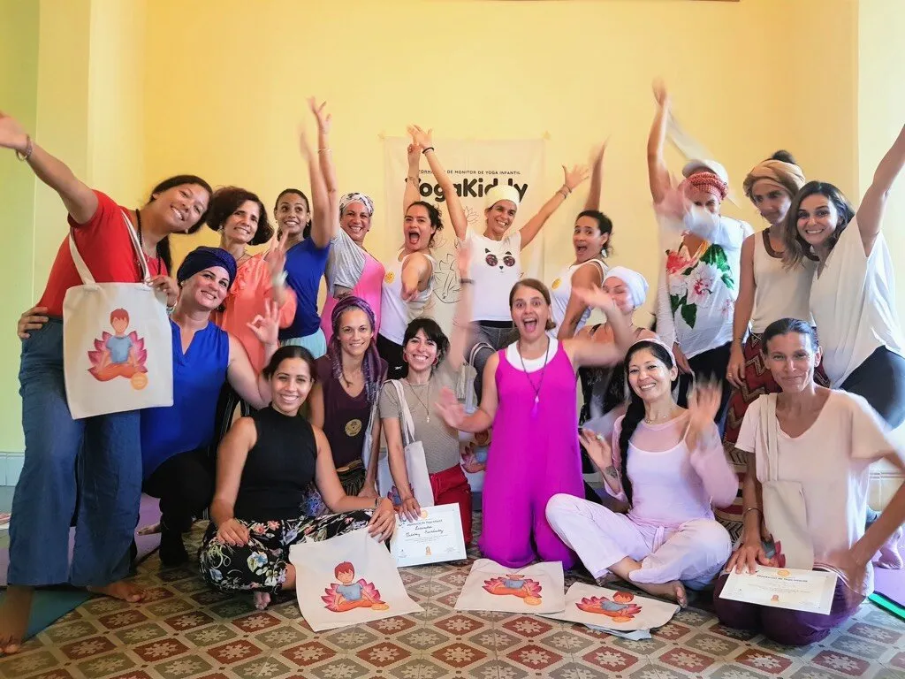
Es con alegría desbordante y el corazón lleno de gratitud que tomo un momento para compartir con ustedes los momentos mágicos que vivimos durante nuestra primera formación presencial en La Habana, Cuba. Como fundadora e instructora de YogaKiddy, especializada en la formación de yoga para niños, tuve el privilegio de pasar días inolvidables con un grupo extraordinario de almas apasionadas por enseñar yoga a las jóvenes mentes curiosas.
El fin de semana pasado, surgió una experiencia única mientras organizábamos la primera generación de nuestra formación dedicada al yoga para niños en Cuba. Durante estos días juntos, reímos, compartimos, aprendimos y crecimos como un grupo unido por nuestro amor por el yoga y nuestro profundo deseo de guiar a nuestros niños hacia la paz interior y la alegría.
Quiero expresar mi profunda gratitud a cada participante de esta aventura extraordinaria. Cada sonrisa, cada cálido abrazo, cada sincero intercambio y cada momento compartido contribuyeron a crear una experiencia única e inolvidable, en el corazón mismo de nuestra formación de yoga para niños.
Mis agradecimientos también se extienden a Anita, cuyo apoyo inquebrantable y atenciones infinitas fueron un verdadero tesoro, y a mi hermana Kenny, cuya presencia y apoyo agregaron una dimensión especial a este viaje.
Mientras tomamos unos merecidos días de descanso en este rincón del paraíso, esperamos con ansias nuestro regreso, llenas de energía renovada, para compartir más conocimiento, inspiración y alegría con las próximas generaciones de estudiantes en el campo del yoga para niños.
Les deseo a todos una semana maravillosa, llena de luz y paz.
Con todo mi amor y gratitud,
Carmen 🐠
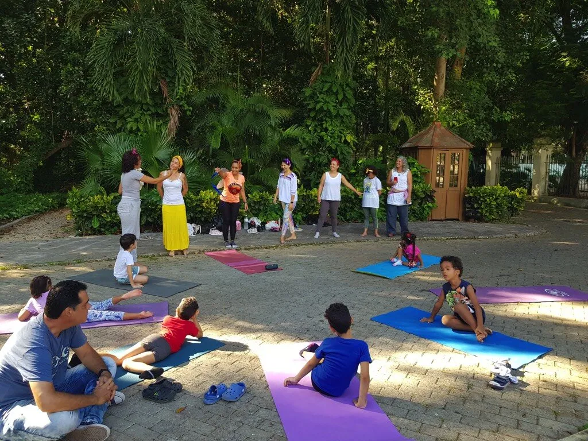
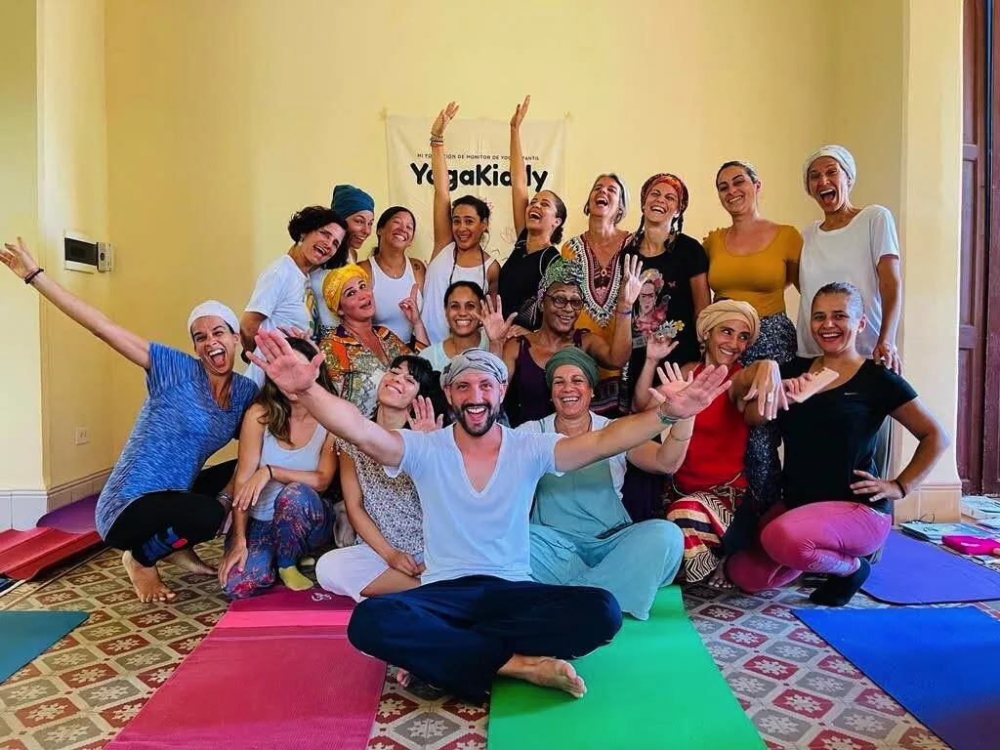
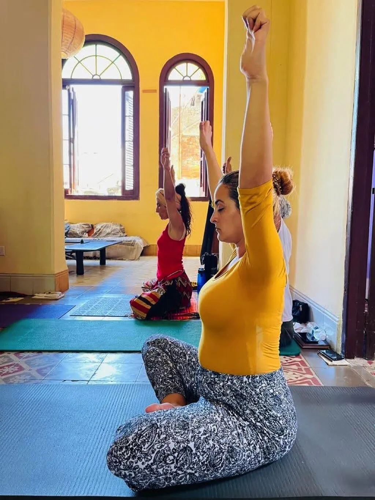
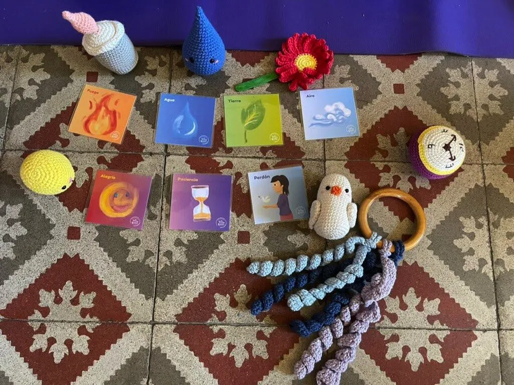
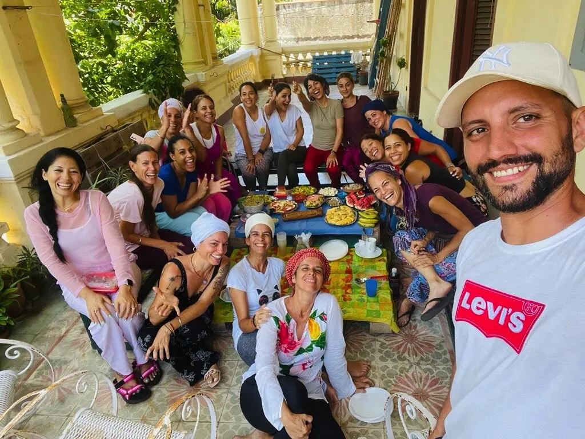
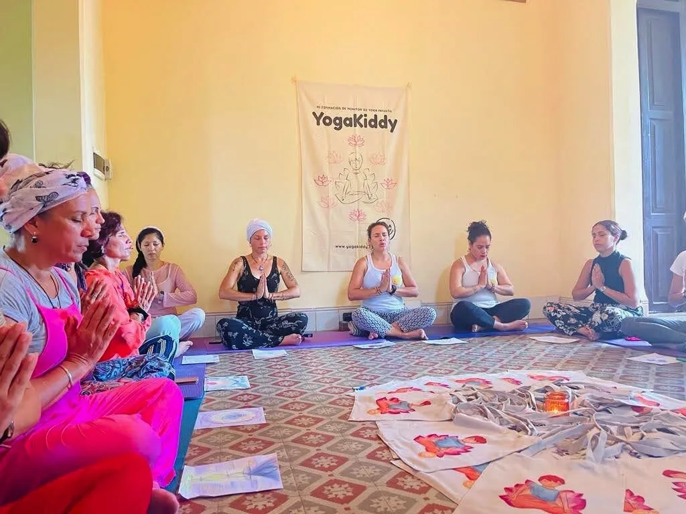
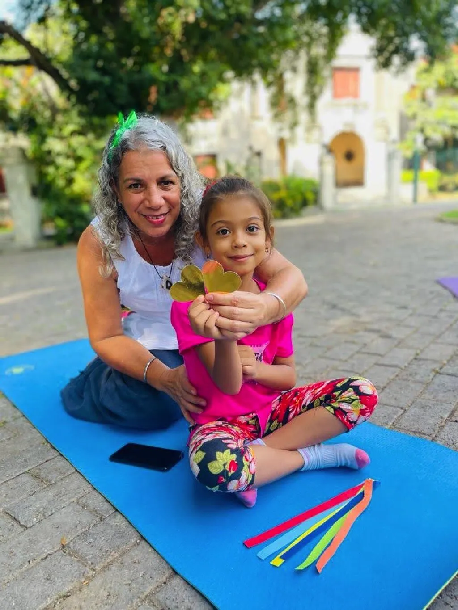
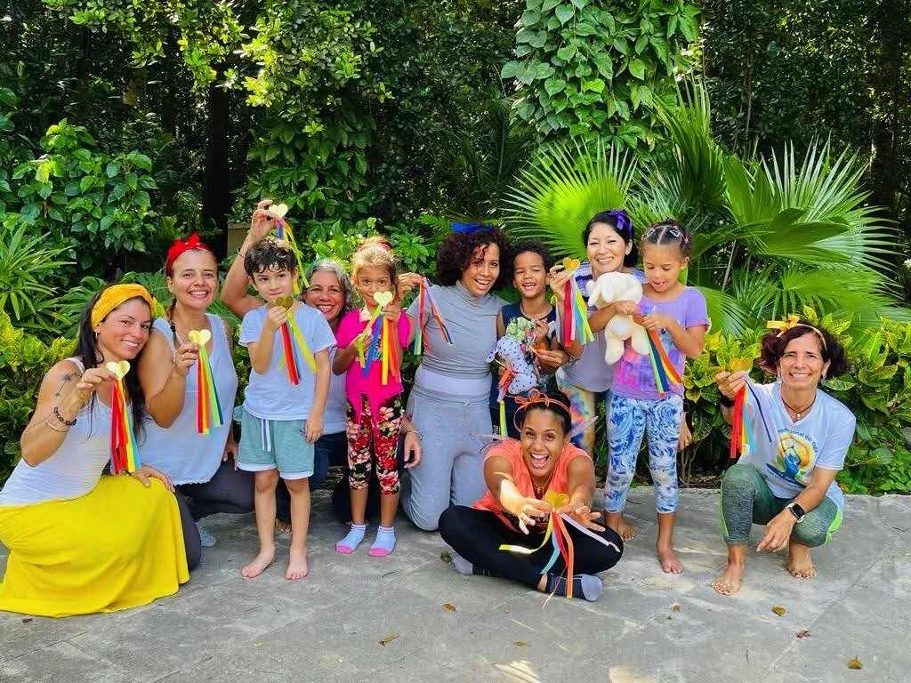
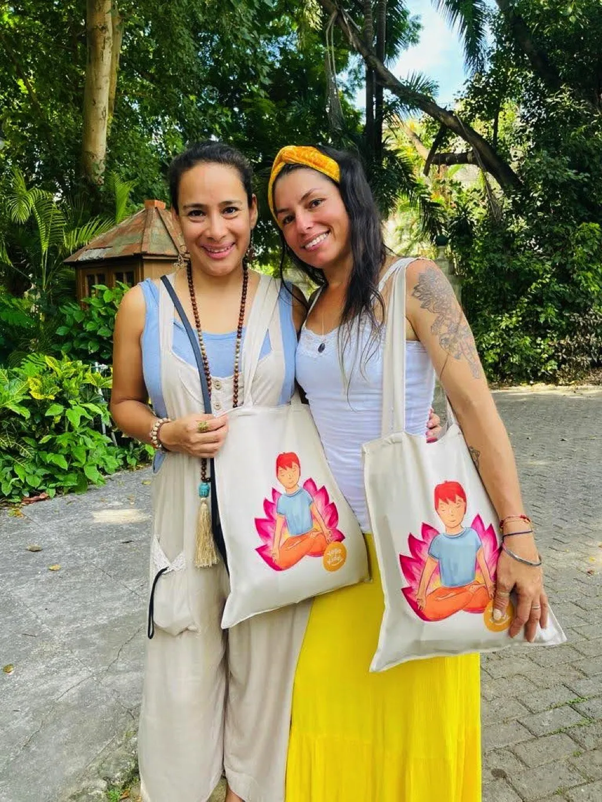
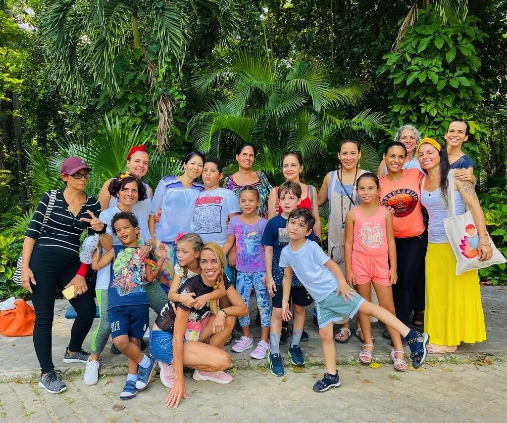
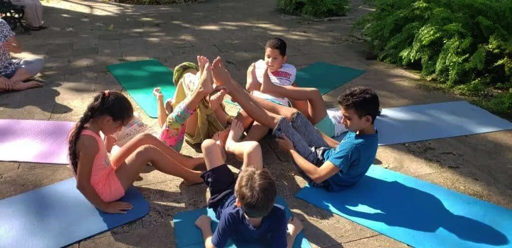
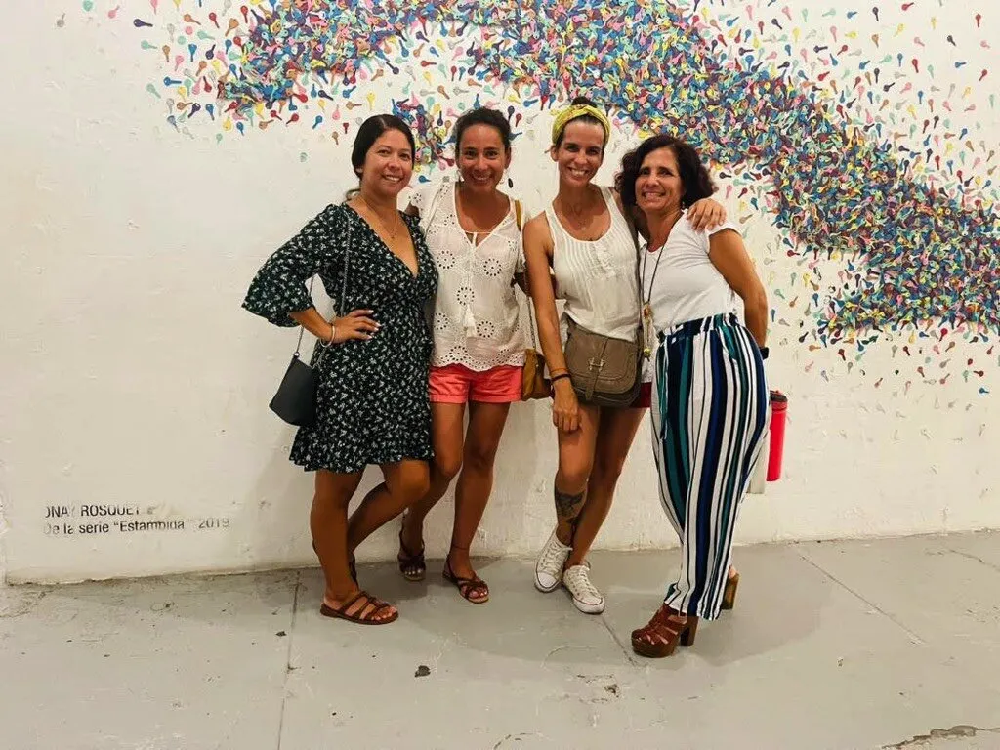